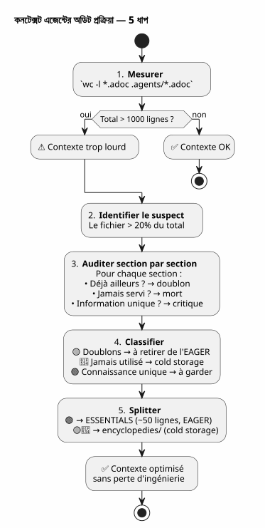

প্রেক্ষাপট এজেন্ট অডিট : যখন আপনার নিজের শাসন সমস্যা হয়ে ওঠে — এবং কীভাবে কিছু হারাবেন না তাই এটিকে মেরামত করা
Publié le 27 April 2026
- দৃশ্য : session 051, কিছুটা ভুল লাগে
- অডিট: ৬২৭টি লাইন বিশ্লেষণ করা
- প্রকৌশলকে হারানোর ভয়
- সমাধান : এনসাইক্লপিডিয়া ভাগ
- ESSENTIALS ফাইলের বিষয়বস্তু
- ফল : -৫০% EAGER কনটেক্সট
- ফোল্ডারের নাম কেন `encyclopedies/
- শ্রেণীর তর্কগত পরবর্তী অংশ
- যা আমি ভিন্নভাবে করতাম
- আপনার নিজের পরিস্থিতি অডিট করার গাইড
- একটি জীবন্ত শাসন
- লিংক
আপনি নিশ্চয়কর এজেন্ট শাসন তৈরি করতে কয়েকটি সপ্তাহ ব্যয় করেছেন। Eager/Lazy, সেশন শেষ হওয়ার প্রক্রিয়া, ঘোরмов ব্যাকআপ। সিস্টেম চলছে। একদিন, এজেন্ট ধীরে হয়ে যায়। উত্তরগুলো ঢিলা হয়ে গেছে। আপনি মাপছেন: স্বয়ংক্রিয়ভাবে লোড হওয়া ১৪১৪ লাইন। এবং সবচেয়ে খারাপ হল যে, দুর্দ দায়ী কোড নয়, ব্যাখালো নয়, সেশন আর্কাইভও নয়। দুর্দ দায়ী সেই ফাইল যা আপনার পদ্ধতিকে নথিবদ্ধ করে।
- টিক
-
[]
দৃশ্য : session 051, কিছুটা ভুল লাগে
30 এপ্রিল ২০২৬, বিকাল ৪:০০. আমি একটি সেশনের মাঝখানেই, উপর`magic-stick`, মій Linux লাইভ ISO নির্মাণের প্রকল্প। Opencode এজেন্টটি স্বয়ংক্রিয়ভাবে আমার Eager ফাইলগুলোকে স্বাভাবিকের মতো আপলোডেছে —AGENT.adoc, PROMPT_REPRISE.adoc, .agents/INDEX.adoc. সবকিছু স্বাভাবিক।
কিন্তু উত্তরগুলো দুর্বল। এজেন্টকে যুক্তি করতে দুই সেকেন্ড বেশি সময় লাগে। ও তিনবারত আগে যা ডিটেলเหছিলে, তা ভুলে যায়। এটা কোনোক্র্যাশ নাকি ত্রুটি নয়; এটি ধীরভাবে ক্ষয়, যা তৎক্ষণে লক্ষ্য করা হয় না।
আমি আগে সেশন ০৪৮-এ এই অভিজ্ঞতা পেয়েছিলাম, যখন আমি খুঁজে পেয়েছিলাম যে শासन ফাইলগুলোর মোট ৫২০০ লাইন ছিল। তখন আমি Hot/Warm/Cold মেকানিজমের ধারণা করেছিলাম, যার ১০ সেশনের স্লাইডিং উইন্ডো, সমান হিমবাহার এবং দুই ট্রিগার সহ সেন্সর ছিল। সমস্যা সমাধান করা হইয়া ছিল। যথা সিদ্ধান্তে।
এখানে, আমরা সেশন ০৫১-এ আছি। ব্যাকআপ রোটেশন সফলভাবে ঘটেছে — EAGER ফাইলগুলো ২০৮৭ থেকে ৫০০ লাইনে পরিবর্তিত হয়েছে। তবুও, প্রসঙ্গটি এখনও ভারী। কিছু আমার বুঝতে না আসে।
আমি একটি টার্মিনাল খুলি এবং টাইপ করি:
wc -l AGENT.adoc AGENT_MODUS_OPERANDI.adoc PROMPT_REPRISE.adoc \
.agents/INDEX.adoc .agents/SESSIONS_HISTORY.adoc \
.agents/archives/COMPLETED_TASKS_ARCHIVE_2026-04.adoc 287 AGENT.adoc
627 AGENT_MODUS_OPERANDI.adoc
51 PROMPT_REPRISE.adoc
218 .agents/INDEX.adoc
18 .agents/SESSIONS_HISTORY.adoc
213 .agents/archives/COMPLETED_TASKS_ARCHIVE_2026-04.adoc
1414 total1414 লাইন। ব্যাকআপ রোটেশনটি ভালভাবে কাটেছে INDEX, SESSIONS_HISTORY এবং COMPLETED_TASKS-এ — তারা পরিষ্কার। কিন্তু একটি হাতি ক</tool_call> আছে যে আমি পূর্বে দেখিনি:৬২৭ লাইনএকই ফাইলে.AGENT_MODUS_OPERANDI.adoc.
এই ফাইলটি সেই ফাইল, যা সেশন ১-এ আমি Eager/Lazy কৌশল নথি করতে লিখেছিলাম। এটি পদ্ধতির ম্যানুয়াল। এটাই এখন একা একায় EAGER প্রেক্ষাপটের ৪৪% হয়ে গেছে।
Failed to generate image: PlantUML preprocessing failed: [From <input> (line 7) ] @startuml skinparam backgroundColor #FEFEFE title সন্দর্ভ EAGER — 1414 লাইন rectangle "AGENT_MODUS_OPERANDI\n**627 লাইন (44%)**" as MOD #FFCDD2 rectangle "AGENT.adoc 287 লাইন (20%)" as AG #BBDEFB ^^^^^ Syntax Error? (Assumed diagram type: activity) @startuml skinparam backgroundColor #FEFEFE title সন্দর্ভ EAGER — 1414 লাইন rectangle "AGENT_MODUS_OPERANDI\n**627 লাইন (44%)**" as MOD #FFCDD2 rectangle "AGENT.adoc 287 লাইন (20%)" as AG #BBDEFB rectangle "INDEX.adoc 218 লাইন (15%)" as IDX #C8E6C9 rectangle "COMPLETED_TASKS\n213 পंক্তি (15%)" as ARC #FFF9C4 rectangle "PROMPT_REPRISE 51 লাইন (4%)" as PRO #E1BEE7 rectangle "SESSIONS_HISTORY 18 লাইন (1%)" as HIS #FFE0B2 note bottom of MOD Le fichier qui documente la méthode est devenu le plus gros poste de dépense end note @enduml
অনুব্যাহতি সম্পূর্ণ। সন্দ্ভ সংরক্ষণের জন্য ডিজাইন করা ফাইলটি এখন মূল সন্দ্ভব্যয়ী হয়ে গেছে। এটি যেন আপনার গাড়ির ব্যবহার নির্দেশিকার ওজন ইঞ্জিনের ওজনের চেয়ে বেশি।
অডিট: ৬২৭টি লাইন বিশ্লেষণ করা
আমি সেকশন-সেকশনে অডিট করার সিদ্ধান্ত নেব। মুছার জন্য না — বুঝতে যের EAGER-এ থাকার যোগ্য এবং যেটি জ্ঞান হ্রাস না করে অন্য জায়গায় থাকতে পারে।
এখানে সঠিক গঠন`AGENT_MODUS_OPERANDI.adoc`এ যা আমি পাই :
অনুচ্ছেদ |
লাইনগুলি |
বিষয়বস্তু |
এখনও উপস্থিত… |
P1 — সমগ্রদৃষ্টি |
64 |
समस्या समाधान की गई है, मूल सिद्धांतों के बारे में, डैशबोर्ड बनाम मैनुअल की तुलना। Wait mixing language - I used Hindi incorrectly. Need proper Bengali. |
বিচারের ফ্যাসলা অবশেষ ও আপীলযোগ্য নয়:
-
সম্পূর্ণ ডুপ্লিকেট(১৬৭ লাইন) : P3, P4, P9 — সবই ইতিমধ্যে আছে`AGENT.adoc` ou
INDEX.adoc, অনেকবার শব্দে শব্দে -
ব্যবহারে কখনো পরামর্শ নেওয়া হয়নি(215 lignes) : P5, P6, P7, P8, Annexes — মেটা-শাসন যা কোনো সেশনে কখনো ব্যবহৃত হয়নি
-
অনুজ্ঞ জ্ঞান(161 লাইন) : P1 এবং P2 — শব্দকোষ LAZY/EAGER, অনুপমা, চার্জিং নীতি
৬২৭ লাইনে,৩৮২ শব্দ. এই ৩৮২টি লাইনটি প্রত্যেক সেশনের শুরুতে লোড করা হয়, এজেন্ট দ্বারা ব্যবহার করা হয়, যা আমি হ্যালো বলতেও আগে তার মনযোগকে দ্রবণ করে দেয়।
Failed to generate image: PlantUML preprocessing failed: [From <input> (line 9) ]
@startuml
skinparam backgroundColor #FEFEFE
skinparam defaultTextAlignment center
title AGENT_MODUS_OPERANDI.adoc — 627 লাইনের অডিট
left to right direction
rectangle "�🟡 **ডুপ্লিকেট**\n167 লাইন (27%)" as DUP #FFF9C4 {
card "P3 — অসাপেক্ষ নিয়ম
^^^^^
Syntax Error? (Assumed diagram type: class)
@startuml
skinparam backgroundColor #FEFEFE
skinparam defaultTextAlignment center
title AGENT_MODUS_OPERANDI.adoc — 627 লাইনের অডিট
left to right direction
rectangle "�🟡 **ডুপ্লিকেট**\n167 লাইন (27%)" as DUP #FFF9C4 {
card "P3 — অসাপেক্ষ নিয়ম
(34 লাইন)" as D1
card "P4 — জীবনচক্র
(১৩৩ লাইন)" as D2
card "P9 — রেফারেন্স
(৩০ লাইন)" as D3
}
rectangle "🔴 **কখনও পরামর্শ নেওয়া হয়নি**\n215 লাইন (34%)" as JAM #FFCDD2 {
card "P5 — মেট্রিক্স
(49 লাইন)" as J1
card "P6 — অনুসন্ধান\n(72 লাইন)" as J2
card "P7 — উন্নতি
(39 লাইন)" as J3
card "P8 — Bootstrap\n(13 লাইন)" as J4
card "সংযোজন — শব্দকোষ
(42 লাইন)" as J5
}
rectangle "🟢 **অনন্য জ্ঞান**
161 লাইন (26%)" as UNI #C8E6C9 {
card "P1 — সারাংশ
(64 লাইন)" as U1
card "P2 — ফাইল গঠন
(97 লাইন)" as U2
}
note bottom of UNI
C'est ÇA qu'il faut garder en EAGER.
Le reste → cold storage.
end note
@enduml
এই আকরেশ হলো সবকিছুই-এর কী। ডুপ্লিকেট (হলুদ) শুধু শব্দ — এজেন্ট দুবার এগুলো পড়ে, দুটি ভিন্ন ফাইলে। কখনো পরামর্শকৃত হয়নি (লাল) মৃত ডকুমেন্টেশন — সावধানে লিখা হয়েছে, কখনো ব্যবহার করা হয়নি। শুধু সবুজই এ জ্ঞান ধারণ করে যা এজেন্ট অন্য কোনো জায়গায় পেতে পারে না।
প্রকৌশলকে হারানোর ভয়
এই পর্যায়ে, আমি স্পষ্টভাবে দেখছি: আমাকে কমান্তর করতে হবে`AGENT_MODUS_OPERANDI.adoc`. কিন্তু আমি সন্দেহ করি
এই ফাইলটি, আমি হাতে लेखেছি। প্রতিটি অংশটি একটি বাস্তব সেশনে শেখা পাঠ্যের ফলাফল। পি৩ অংশটি一个`rm -rf`দুর্ঘটিত উপর`bakery-plugin`যেটা আমাকে বাস্তব Firebase টোকেন খরচিয়েছিল। P4 অংশটি পन्द्रহ সেশন এর ফল, যেখানে আমি আর্কাইভ করতে ভুল হত এবং দরকারি তথ্য হারাবত। ৬-ধাপের পদ্ধতি কোন বই থেকে না বের হয়েছে — এটি ব্যথা থেকে বের হয়েছে।
এই বিভাগগুলো মুছে ফেললে, আমার নিজস্ব ইঞ্জিনিয়ারিং ইতিহাসকে নষ্ট করা হত। যে পাঠগুলো এগুলো উদ্ভব করেছে, যে সেশনসময় waarop আমি এগুলো খুঁজে পেয়েছিলাম, যে ভুলগুলো যা আমি আর কখনও করে নেই চাই। এটি শুধু টেক্সট নয়—এটি কঠোর করা অভিজ্ঞতা।
এই জায়গায়েই আমি সমাধানকে গাইড করবে এমন নীতিটি গঠন করি :
__ কখনো মুছবেন না. সর্বদা স্থানান্তর করুন।জ্ঞানটি প্রজেক্ট থেকে বিলুপ্ত হওয়ার দরকার নেই। এটি শুধু স্বয়ংক্রিয়ভাবে লোড করা হবে না যখন এটি প্রয়োজন নেই। (No visible characters)
সমাধান : এনসাইক্লপিডিয়া ভাগ
Le modèle que je propose est simple et s’inspire de la façon dont Wikipédia a grandi : quand un article devient trop long, on ne le coupe pas — on crée un article détaillé et on garde un résumé dans l’article principal.
যে জন্য`AGENT_MODUS_OPERANDI.adoc`, এটি দেয় :
-
নিষ্কাশন১৬১টি অনন্য জ্ঞানের পंক্তিগুলো (P1 + P2) একটি নতুন ফাইলে`LAZY_EAGER_ESSENTIALS.adoc`— সঙ্কুচিত ~50 লাইনে, সঠিকভাবে EAGER
-
রিমেইন করা
AGENT_MODUS_OPERANDI.adocen.agents/encyclopedies/LAZY_EAGER_ENCYCLOPEDIE.adoc— 627 লাইনের মূল ফাইল, সংরক্ষিত intact, এ cold storage -
কোনো চার্জ করবেন না le fichier encyclopédie automatiquement — il est là pour l’humain, pour la distillation future, pour l’agent qu’on invoquera dans six mois avec un meilleur modèle
Failed to generate image: PlantUML preprocessing failed: [From <input> (line 8) ]
@startuml
skinparam backgroundColor #FEFEFE
skinparam defaultTextAlignment center
title Split বিশ্বকোষীয় — AGENT_MODUS_OPERANDI
left to right direction
rectangle "**AGENT_MODUS_OPERANDI.adoc**
^^^^^
Syntax Error? (Assumed diagram type: class)
@startuml
skinparam backgroundColor #FEFEFE
skinparam defaultTextAlignment center
title Split বিশ্বকোষীয় — AGENT_MODUS_OPERANDI
left to right direction
rectangle "**AGENT_MODUS_OPERANDI.adoc**
627 লাইন
(বিভাগের আগে)" as BEFORE #FFCDD2 {
}
rectangle " " as ARROW1
rectangle " " as ARROW2
rectangle "**LAZY_EAGER_ESSENTIALS.adoc**
**~50 লাইন — EAGER**" as ESS #C8E6C9 {
card "P1 সংক্ষিপ্ত\n(15 লাইন)" as E1
card "P2 সংক্ষিপ্ত\n(35 লাইন)" as E2
}
rectangle "**.agents/encyclopedies/**\n**LAZY_EAGER_ENCYCLOPEDIE.adoc**\n627 লাইন — COLD" as ENC #BBDEFB {
card "P1 থেকে Annexes
(সম্পূর্ণ, অক্ষুণ্ন)" as C1
}
BEFORE -[#4CAF50]-> ESS : "গুরুত্বপূর্ণ জ্ঞানের নিষ্কাশন"
BEFORE -[#2196F3]-> ENC : "সম্পূর্ণ সংরক্ষণ
ইঞ্জিনিয়ারিং"
note bottom of ESS
Chargé automatiquement
en début de session
→ L'agent comprend le vocabulaire
end note
note bottom of ENC
Jamais chargé automatiquement
Consultable par l'humain
Matériau brut pour distillation future
end note
@enduml
নাম`encyclopedies/`এটি তুচ্ছ নয়। একটি এনসাইক্লোপেডি, এটি একটি আর্কাইভ ফাইল নয় — এটি سازمانিত জ্ঞানের একটি সংগ্রহ, যেটি পরামর্শযোগ্য কিন্তু পোর্টেবল নয়। মেট্রোতে ইউনিভার্সেল ইসাইক্লোপেডিয়া পড়া হয় না। আমরা इसे গ্রন্থাগারে রাখি, এবং সেখানে যাই যখন আমাদের একটি নির্দিষ্ট প্রশ্ন থাকে।
এই ফোল্ডারের ভূমিকা হল একটি শীতল রেফারেন্স গ্রন্থাগার, যা গঠনকৃত ও সম্পূর্ণ — এবং এজেন্ট তা স্বয়ংক্রিয়ভাবে স্পর্শ না করে।
ESSENTIALS ফাইলের বিষয়বস্তু
এখানে নতুন ফাইলটি বাস্তবে কেমন দেখтся`LAZY_EAGER_ESSENTIALS.adoc`, P1 এবং P2 থেকে সংগ্রহিত এবং সংকুচিত :
= Stratégie LAZY/EAGER — Principes Essentiels
[abstract]
Ce fichier définit la stratégie de gestion du contexte agent.
Chargé automatiquement (EAGER) en début de session.
== Principes
|===
| EAGER | LAZY
| Tableau de bord | Manuel du propriétaire
| Chargé automatiquement | Chargé sur demande
| <= 100 lignes, <= 10k tokens | Illimité, détaillé
| Règles absolues, mission courante | Archives, historique, références
|===
== Politique de Chargement
|===
| Fichier | Type | Quand charger
| PROMPT_REPRISE.adoc | EAGER | Début session (auto)
| *_ESSENTIALS.adoc | EAGER | Début session si EPIC active
| .agents/INDEX.adoc | EAGER | Début session (auto)
| *_REFERENCE.adoc | LAZY | Sur besoin (détails architecture)
| .agents/sessions/N-*.adoc | LAZY | Sur demande (détails session)
| .agents/encyclopedies/*.adoc | COLD | Jamais auto (humain seulement)
|===
== Comment l'Agent Sait Quoi Charger
Début session → PROMPT_REPRISE + INDEX + ESSENTIALS actifs.
Besoin de détails → charger les *_REFERENCE et sessions/ en LAZY.
Connaissance froide → encyclopedies/, jamais automatique.পঞ্চাশটি লাইন। এটাই এজেন্টকে মেকানিক বোঝার জন্য প্রয়োজনীয় সবকিছু। বাকি সব — পাঠের ইতিহাস, বিস্তারিত উপমা, ধাপে ধাপে পদ্ধতি, সংযুক্তি — এনসাইক্লোপেডিয়ায় বাস করে।
এবং সবচেয়ে গুরুত্বপূর্ণ :কিছুই মুছে ফেলা হয়নি. ৬২৭টি ইঞ্জিনিয়ারিং লাইন এখনও সেখানে আছে, মধ্যে`.agents/encyclopedies/LAZY_EAGER_ENCYCLOPEDIE.adoc`}. এগুলো শুধু গ্রন্থাগারে সাজানো আছে, কাজের মেজের ওপর না.
ফল : -৫০% EAGER কনটেক্সট
বিভাজনের আগে :
287 AGENT.adoc
627 AGENT_MODUS_OPERANDI.adoc
51 PROMPT_REPRISE.adoc
218 .agents/INDEX.adoc
18 .agents/SESSIONS_HISTORY.adoc
213 .agents/archives/COMPLETED_TASKS_ARCHIVE_2026-04.adoc
1414 totalস্প্লিটের পরে:
287 AGENT.adoc
50 LAZY_EAGER_ESSENTIALS.adoc ← remplace 627 lignes
51 PROMPT_REPRISE.adoc
218 .agents/INDEX.adoc
18 .agents/SESSIONS_HISTORY.adoc
213 .agents/archives/COMPLETED_TASKS_ARCHIVE_2026-04.adoc
837 total ← -41%Failed to generate image: PlantUML preprocessing failed: [From <input> (line 7) ] @startuml skinparam backgroundColor #FEFEFE title EAGER প্রেক্ষপট এনসাইক্লোপিডিক স্প্লিটের পরে — ৮৩৭ লাইন (-৪১%) rectangle "AGENT.adoc\n287 লাইন (34%)" as AG #BBDEFB rectangle "INDEX.adoc 218 লাইন (26%)" as IDX #C8E6C9 ^^^^^ Syntax Error? (Assumed diagram type: activity) @startuml skinparam backgroundColor #FEFEFE title EAGER প্রেক্ষপট এনসাইক্লোপিডিক স্প্লিটের পরে — ৮৩৭ লাইন (-৪১%) rectangle "AGENT.adoc\n287 লাইন (34%)" as AG #BBDEFB rectangle "INDEX.adoc 218 লাইন (26%)" as IDX #C8E6C9 rectangle "COMPLETED_TASKS 213 লাইন (২৫%)" as ARC #FFF9C4 rectangle "PROMPT_REPRISE 51 লাইন (6%)" as PRO #E1BEE7 rectangle "ESSENTIALS 50 লাইন (6%)" as ESS #A5D6A7 rectangle "SESSIONS_HISTORY 18 লাইন (2%)" as HIS #FFE0B2 note bottom of ESS De 627 → 50 lignes 577 lignes d'ingénierie préservées en cold storage Rien de perdu. Tout de relocalisé. end note @enduml
বৃহত্তম ব্যবহারকারী (AGENT_MODUS_OPERANDI, 627 লাইন) একটি ৫০ লাইনের ফাইল দিয়ে প্রতিস্থাপন করা হয়েছে। লাভ তাৎক্ষণিক : ৫৭৭ লাইনের প্রেক্ষাপট মুক্ত। এজেন্ট শ্বাস নিচ্ছে।
এবং মধ্যে`.agents/encyclopedies/`, ৬২৭ লাইনের মূল ফাইলটি অপেক্ষা করছে — অক্ষুণ্ণ, তার সব অংশসহ, ডুপ্লিকেট অংশগুলো এবং কোনো কবলে ব্যবহৃত না হওয়া অংশগুলোসাথে। কারণ একদিন একটি উন্নত মডেল یا একজন মানব ডেটা সায়েন্টিস্ট এই কোণগুলো, এই স্বীকৃত রিডান্ডেন্সিগুলো এবং এই শেখা পাঠগুলোকে চেক করতে চান। এবং সেই দিনে, মূল উপাদান সেখানে থাকবে।
ফোল্ডারের নাম কেন `encyclopedies/
নাম বেছে নেওয়া শুধুমাত্র সতাহি নয়। এটি মেকানিজ़মের দর্শনকে কোড করে।
একটি আর্কাইভ (archives/) ইতিহাসের ডেটা সময়ক্রমে সাজানো আছে — যেমন COMPLETED_TASKS মাসিক। একটি backup (backup/) একটি টাইমস্ট্যাম্প করা স্ন্যাপশট — একটি অতীতের অবস্থার নিরাপত্তা কপি।
একটি encyclopédie, এটা অন্য কিছু। এটি একটি বিষয়-ভিত্তিক জ্ঞানের সংগ্রহ, বিষয় অনুসারে গঠিত, ব্যাপক কিন্তু রৈখিক নয়। একটি এনসাইক্লোপিডিয়া এর শুরু থেকে শেষ পর্যন্ত পড়া হয় না। এটিতে ডুব लगিয়ে একটি নির্দিষ্ট প্রশ্নের উত্তর দেওয়ার জন্য।
এটি বিল্কুলই এই ফাইলের চুক্তি :
ফাইল |
ভুমিকা |
অ্যাক্সেস |
দানাপন |
|
ঐতিহাসিক ডেটা (মাসিক শেষ হওয়া কাজ) |
LAZY, গঠিত |
কালানুক্রমিক |
|
স্ন্যাপশট ঠাণ্ডা (১০ সেশনের তরঙ্গ) |
COLD, পূর্ণ কপি |
কালানুক্রমিক |
|
বিষয়বস্তু সম্পর্কে সম্পূর্ণ জ্ঞান (প্রদ্ধতি, প্যাটার্ন) |
COLD, কখনও অটো না |
বিষয়বস্তু |
এই পার্থক্য জিনিসপত্রকে ব্যাখ্যান দূর করে। প্রতিটি ফাইল জানে যে এটি কোথায় থাকবে, অনুসারে ce qu’il contiene, না, quand il a été creado.
শ্রেণীর তর্কগত পরবর্তী অংশ
এখানে তেমনভাবে তিনটি টুকরো একে অপরের সাথে ফিট হয়:
Failed to generate image: PlantUML preprocessing failed: [From <input> (line 9) ]
@startuml
skinparam backgroundColor #FEFEFE
skinparam defaultTextAlignment center
skinparam wrapWidth 220
title এজেন্ট গোভর্ন্যান্সের ত্রিলজি
left to right direction
package "📖 **অনুচ্ছেদ 0108**
^^^^^
Syntax Error? (Assumed diagram type: class)
@startuml
skinparam backgroundColor #FEFEFE
skinparam defaultTextAlignment center
skinparam wrapWidth 220
title এজেন্ট গোভর্ন্যান্সের ত্রিলজি
left to right direction
package "📖 **অনুচ্ছেদ 0108**
ইগার/লেজি কৌশল" as A1 #E8F5E9 {
card "মেমোরি এজেন্ট
সেশনের মধ্যে" as M1
card "EAGER ফাইলগুলো
(স্বয়ং-আরম্ভিত)" as M2
card "ফাইল LAZY\n(অনুসারে)" as M3
card "প্রক্রিয়া ৬ ধাপ" as M4
}
package "🧊 **Article 0110**
মেকানিজ হট/ওয়ারম/কোল্ড" as A2 #FFF9C4 {
card "বয়স্কতা
প্রসঙ্গের" as V1
card "স্লাইডিং উইন্ডো
10 সেশন" as V2
card "ঠান্ডা তরঙ্গ
একই" as V3
card "সেন্সরের সঙ্গে
দুই ট্রিগার" as V4
}
package "�🔍 **অনুচ্ছেদ 0111**\nনিরীক্ষা + সমাধান এনসাইক্লোপেডিয়া" as A3 #BBDEFB {
card "ফাইল অডিট\nEAGER" as E1
card "শনাক্তকরণ
অপসারের" as E2
card "Split\nESSENTIALS/বিশ্বকোষ" as E3
card "সংরক্ষণ
ইঞ্জিনিয়ারিং এর" as E4
}
A1 --> A2 : "স্মৃতি বাড়ছে
→ একটি প্রণালীর দরকার
বয়োদ্ধাওয়ার জন্য"
A2 --> A3 : "বয়স্কতাও যথেষ্ট নয়
→ যাকে অডিট করতে হবে
EAGER-এ থাকা যোগ্য"
note bottom of A3
✅ Les trois couches sont en place
sur 6 projets actifs
end note
@enduml
-
0108উত্তর দেয়: « দুটি সেশনের মধ্যে এজেন্টকে মেমরি দেওয়ার উপায় কি?
-
0110উত্তর: « এই মেমোরি এজেন্টকে কীভাবে গলা ধাকielte রাখতে পারে তা কিভাবে বন্ধ করা যায়?
-
0111উত্তর দisce : “ এবং যদি সমস্যা আ카이ভের আকার নয়, বরং আমাদের EAGER-এ রাখার জন্য বাছাই করা জিনিস ?”
প্রথমটি নিবন্ধটি নকশা গড়ে উঠিয়েছে। দ্বিতীয়টি বয়স্কতা মেকানিজম যুক্ত করেছে। তৃতীয়টি বিষয়বস্তুকে অডিট করছে — এবং আবিষ্কার করেছেন যে পদ্ধতিই নিজেই সমস্যা হয়ে উঠেছে।
যা আমি ভিন্নভাবে করতাম
পশ্চালোকে, আমি প্রাথমিক ডিজাইনের ভুলটি বুঝি।`AGENT_MODUS_OPERANDI.adoc`একটি একক নথি — একটি ম্যানিফ-esteে তৈরি করা হয়েছে। এই চিন্তা ফর্মালাইজ করার জন্য সঠিক পদ্ধতি ছিল। কিন্তু একবারের চinture ফর্মালাইজ হওয়ার পরে, নথিকে உடবেনে ভাগ করা উচিত ছিল: মূল অংশ EAGER‑এ, সম্পূর্ণ অংশ cold‑এ।
আমি তাতে করিনি কারণ আমি নথিটিতে গর্বিত ছিলাম। ৬২৭টি শুদ্ধ ইঞ্জিনিয়ারিং লাইন, হাতে লেখা, প্রতিটি অংশ কোনো সেশনের পাঠের ফল। এটা আমার শ্রেষ্ঠ কাজ ছিল। এবং যেকোনো লেখকের মতো, আমি इसे ছোট করতে কষ্ট করেছি।
পাঠ:একটি ডকুমেন্ট ভালো হলে তা স্বয়ংক্রিয়ভাবে লোড করা উচিত নয়।. বিষয়বস্তু রপ্তানির গুণমানের কোনো সম্বন্ধই এজেন্টের তাত্কালিক প্রেক্ষান্তের সাথে এর প্রাসঙ্গিকতার সঙ্গে নেই।
আজকে, নিয়মটি সরল: EAGER contexts-এ 100 লাইনের বেশি যেকোনো দস্তাবেজ একটি संदेह। এটি একটি অডিটের পাত্র। একটি দণ্ড নয় — একটি অডিট। এবং প্রশ্ন কখনো « কি আমি তা মুছে ফেলব? » নয়, বরং « কি আমি প্রতিটি সেশনে এটি লোড করব?
আপনার নিজের পরিস্থিতি অডিট করার গাইড
�যদি আপনি দুটি প্রথম অনুচ্ছেদ অনুসরণ করেছেন এবং নিজের ইগার/লেজি গবর্নেন্স সেট আপ করেছেন, তাহলে এখানে পাঁচ ধাপের নিরীক্ষা প্রক্রিয়া দেওয়া হচ্ছে:
-
নিমাপন:`wc -l`আপনার সব EAGER ফাইলে। মোটটি ১০০০ লাইনের চেয়ে কম হওয়া উচিত।
-
সবচেয়ে বড়টি সনাক্ত করা: মোটের 20% ও বেশি ওজনের ফাইল πρώτο সন্দেহ।
-
প্রতিটি অংশকে অংশে অংশে অডিট করুন: প্রতিটি বিভাগের জন্য, আপনি জিজ্ঞাসা করুন « এই তথ্য কি ইতিমধ্যে অন্য কোনো জায়গায় আছে? কি এজেন্টটি ইতিমধ্যে অন্য কোনো ফাইলে এটিকে পড়েছে? কি এটিকে পिछলে ৫ সেশনে ব্যবহার করা হয়েছে?
-
শ্রেণীবিন্যাসকারী: ডুপ্লিকেট, কখনো ব্যবহৃত নয়, অনন্য জ্ঞান.
-
বিভক্ত করা অথবা স্থানান্তরিত করা: যা অনন্য এবং গুরুত্বপূর্ণ → ESSENTIALS সংকুচিত. বাকি সব →
encyclopedies/.

এই প্রক্রিয়াটি ১৫ মিনিট লাগে। ৫০ সেশনের প্রকল্পে, এটি ভবিষ্যতের প্রতিটি সেশনে সैकड़ো টোকেন বাঁচায়। রওআই তৎক্ষণিক।
একটি জীবন্ত শাসন
এই তিনটি নিবন্ধের সিরিজ থেকে আমি যে জ্ঞান পেয়েছি, তা হল এজেন্ট গবর্নেন্স একটি সম্পূর্ণ পণ্য নয়। এটি একটিজীবন্ত প্রাণী। ও প্রোজেক্টের সাথে বৃদ্ধি পায়। ও বৃদ্ধি-সম্পর্কিত রোগ পায়। ও নিয়মিত চেক-আপের প্রয়োজন হয়।
সেশনে ০৪৮ খুলে আসেছে যে আর্কাইভগুলো বাড়ছে। সেশনে ০৫১ খুলে আসেছে যে পদ্ধতিই নিজেই বাড়ছে। সেশনে ০৬০ সম্ভবত অন্য কিছু প্রকাশ করবে। এটি স্বাভাবিক। এটি সুস্থ। কোনো সময়ে নিজেকে প্রশ্ন না করে থাকা শাসনব্যবস্থা একটি মৃত শাসনব্যবস্থা।
তিনটি মেকানিজম — Eager/Lazy, Hot/Warm/Cold, split encyclopédique — গভীর রক্ষা ব্যবস্থা গঠন করে, যা সন্দ্ভের ভরাবরির বিরুদ্ধে। কোনোটিই একায় পর্যাপ্ত নয়। একসাথে, তারা একে অপরের পূরক হয়:
-
উত্সাহী/অলসতথ্য কাঠামো গড়ুন উপলব্ধি অনুযায়ী
-
গরম/উষ্ণ/ঠান্ডাstructure l’information par fraîcheur
গঠন করুন তথ্যাটি তাজगी अनुयायी
-
এনসাইক্লোপিডিয়া অডিটতথ্য সংগঠিত কর ঘনত্ব অনুযায়ী
Failed to generate image: PlantUML preprocessing failed: [From <input> (line 6) ] @startuml skinparam backgroundColor #FEFEFE skinparam nodeBackgroundColor #E3F2FD title প্রেক্ষতের সংতৃপ্তি বিরুদ্ধে গভীর রক্ষা node "**এজেন্টের প্রেক্ষাপট** ^^^^^ Syntax Error? (Assumed diagram type: sequence) @startuml skinparam backgroundColor #FEFEFE skinparam nodeBackgroundColor #E3F2FD title প্রেক্ষতের সংতৃপ্তি বিরুদ্ধে গভীর রক্ষা node "**এজেন্টের প্রেক্ষাপট** ~800 লাইন স্বাস্থ্য" as CTX #C8E6C9 node "স্তর 1 **EAGER / LAZY**" as C1 #BBDEFB node "স্তর ২\n**গরম / উষ্ণ / ঠান্ডা**" as C2 #BBDEFB node "স্তর 3 **প্রয়োজনীয় / এনসাইক্লোপিডিয়া**" as C3 #BBDEFB CTX --> C1 : "উপলব্ধি অনুযায়ী কাঠামো **উপলব্ধি**" CTX --> C2 : "কাঠামো двойারা **তাজগি**" CTX --> C3 : "কাঠামো द्वारा **ঘনত্ব**" note bottom of C3 Les trois couches sont nécessaires. Aucune n'est suffisante seule. end note @enduml
এই তিনটি স্তরের সাথে, এজেন্টের প্রেক্ষাপটে`magic-stick`২০৮৭ লাইন (কোনও অপ্টিমাইজেশন আগে) থেকে প্রায় ৮০০ লাইনে এগিয়েছে — ২.৬ গুণে হ্রাস। কোনও ডকুমেন্টেশন লাইন, কোনও সেশন আর্কাইভ, কোনও শেখা পাঠ হারিয়নি।
সবই ওখানে আছে। আরও ভালোভাবে সাজানো।
লিংক
-
অনুচ্ছেদ ০১০৮ — অগ্রাধিকার/বিলম্বিত কৌশল:AsciiDoc ব্যবহার করে AI 에이জেন্টকে নিয়ন্ত্রণ করা
-
Article 0110 — মেকানিজম Hot/Warm/Cold :Sliding Window এবং শীতল তরঙ্গ
-
আমার সাইট : https://cheroliv.com
-
প্রকল্প`magic-stick`: https://github.com/cheroliv/magic-stick
জ্ঞানকে বিলুপ্ত হতে দরকার নেই। এটি শুধু তখনই লোড করা উচিত নয় যখন এটি প্রয়োজন নয়।